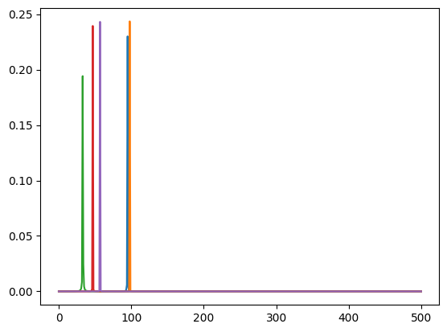
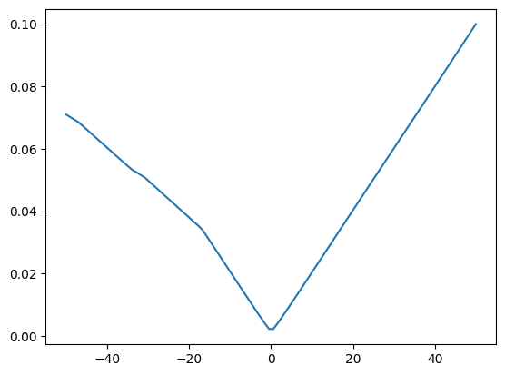
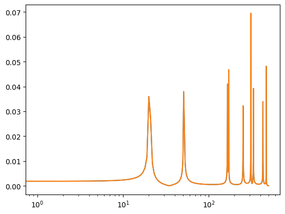
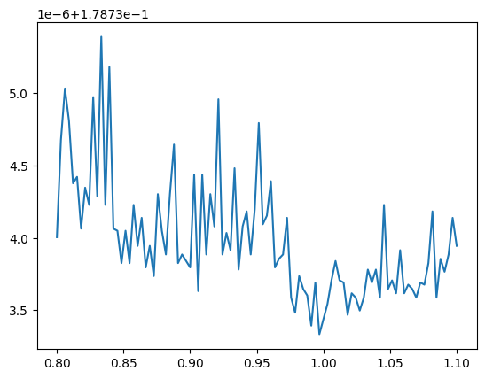

import matplotlib.pyplot as pltLosses
wasserstein_1d
wasserstein_1d (u_values, v_values, u_weights=None, v_weights=None, p=1, require_sort=True)
*Computes the 1 dimensional OT loss [15] between two (batched) empirical distributions
.. math: OT_{loss} = _0^1 |cdf_u^{-1}(q) - cdf_v{-1}(q)|p dq
It is formally the p-Wasserstein distance raised to the power p. We do so in a vectorized way by first building the individual quantile functions then integrating them.
This function should be preferred to emd_1d whenever the backend is different to numpy, and when gradients over either sample positions or weights are required.*
| Type | Default | Details | |
|---|---|---|---|
| u_values | |||
| v_values | |||
| u_weights | NoneType | None | |
| v_weights | NoneType | None | |
| p | int | 1 | |
| require_sort | bool | True | |
| Returns | cost: float/array-like, shape (…) | the batched EMD |
quantile_function
quantile_function (qs, cws, xs)
Computes the quantile function of an empirical distribution
| Type | Details | |
|---|---|---|
| qs | ||
| cws | ||
| xs | ||
| Returns | q: array-like, shape (…, n) | The quantiles of the distribution |
compute_mag
compute_mag (x:jax.Array)
| Type | Details | |
|---|---|---|
| x | Array | (b, t) |
| Returns | Array |
spectral_wasserstein
spectral_wasserstein (x, y, squared=True, is_mag=False)
log_mag_loss
log_mag_loss (pred:jax.Array, target:jax.Array, eps:float=1e-10, distance:str='l1')
Spectral log magtinude loss but for a fft of a signal See Arik et al., 2018
| Type | Default | Details | |
|---|---|---|---|
| pred | Array | complex valued fft of the signal | |
| target | Array | complex valued fft of the signal | |
| eps | float | 1e-10 | |
| distance | str | l1 |
log_mag
log_mag (x:jax.Array, eps:float=1e-10)
phase = 0.0
omegas = jax.random.uniform(jax.random.PRNGKey(0), shape=(10,)) * 100
mag = 0.99
def osc_bank(t, omegas):
return mag * jnp.sin(omegas[..., None] * jnp.pi * 2 * t[None] + phase)t = jnp.linspace(0, 1, 1000)
gt_osc_values = osc_bank(t, omegas)
# print(gt_osc_values)
print(gt_osc_values.shape)(10, 1000)a = jax.vmap(spectral_wasserstein)(gt_osc_values, gt_osc_values)
print(a)[0. 0. 0. 0. 0. 0. 0. 0. 0. 0.]def loss_fn(omega):
pred_osc_values = osc_bank(t, omega)
x_fft = compute_mag(gt_osc_values)
y_fft = compute_mag(pred_osc_values)
l2_mag_loss = jnp.mean((x_fft - y_fft) ** 2)
return l2_mag_loss
def ot_loss_fn(omega):
pred_osc_values = osc_bank(t, omega)
ot_loss = jnp.mean(
jax.vmap(spectral_wasserstein)(gt_osc_values, pred_osc_values),
)
return ot_lossx_fft = compute_mag(gt_osc_values) ** 2
plt.plot(x_fft[:5].T)
ranges = jnp.linspace(-50, 50, 100)
omegas_scan = omegas + ranges[:, None]
# print(omegas_scan.shape)
loss, grad = jax.vmap(jax.value_and_grad(loss_fn))(omegas_scan)
loss_ot, grad_ot = jax.vmap(jax.value_and_grad(ot_loss_fn))(omegas_scan)
print(loss.shape, loss.dtype)
print(loss_ot.shape, loss_ot.dtype)
# loss_mean = jnp.mean(loss, axis=1)
# loss_ot_mean = jnp.mean(loss_ot, axis=-1)
# print(loss_mean.shape)
# plt.plot(ranges, loss)
plt.plot(ranges, loss_ot)(100,) float32
(100,) float32
omegas_gt = jax.random.uniform(jax.random.PRNGKey(0), shape=(10,)) * 1000
omegas_pred = omegas_gt * 1
pred_osc_values = osc_bank(t, omegas_pred).mean(axis=0)
gt_osc_values = osc_bank(t, omegas_gt)
x_mag = compute_mag(gt_osc_values.mean(axis=0))
y_mag = compute_mag(pred_osc_values)
plt.semilogx(x_mag)
plt.semilogx(y_mag)
# from ott.solvers.linear import solve_univariate
from ott.solvers.linear.univariate import quantile_solver
from ott.geometry.pointcloud import PointCloud
from ott.problems.linear import linear_problem
from ott.solvers.linear import sinkhorn
from ott.solvers import linear
def wasserstein_1d_jax(
x,
y,
):
geom = PointCloud(x, y)
# prob = linear_problem.LinearProblem(geom)
out = linear.solve(geom)
return out.reg_ot_cost
# def wasserstein_1d_jax(
# x: jnp.ndarray,
# y: jnp.ndarray,
# a: jnp.ndarray | None = None,
# b: jnp.ndarray | None = None,
# ):
# geom = PointCloud(x[..., None], y[..., None])
# prob = linear_problem.LinearProblem(geom, a=a, b=b)
# out = quantile_solver(prob)
# return jnp.average(out.ot_costs)
def sinkhorn_loss(
x,
y,
a,
b,
epsilon=1e-1,
threshold=1e-3,
):
geom = PointCloud(x[..., None], y[..., None], epsilon=epsilon)
out = linear.solve(geom, a=a, b=b)
return out.reg_ot_cost
# prob = linear_problem.LinearProblem(geom, a=a, b=b)
# solver = sinkhorn.Sinkhorn(
# threshold=threshold,
# max_iterations=1000,
# norm_error=2,
# lse_mode=True,
# )
# out = solver(prob)
# out.reg_ot_cost
# return jnp.average(out.ot_costs)x_pos = jnp.linspace(0, 1, x_mag.shape[-1])
stacked_x = jnp.stack([x_pos, x_mag], axis=-1)
stacked_y = jnp.stack([x_pos, x_mag], axis=-1)
print(stacked_x.shape, stacked_y.shape)
ot_costs_jax = wasserstein_1d_jax(stacked_x, stacked_y)
print(ot_costs_jax)(501, 2) (501, 2)
0.017973557x_mag = x_mag / jnp.sum(x_mag)
y_mag = y_mag / jnp.sum(y_mag)
x_pos = jnp.linspace(0, 1, x_mag.shape[-1])
ot_costs = wasserstein_1d(x_pos, x_pos, x_mag, y_mag)
print(ot_costs)0.0stacked = jnp.stack([x_pos, x_mag], axis=-1)
print(stacked.shape)
# plt.scatter(stacked[:, 0], stacked[:, 1])(501, 2)def loss_fn_ot(factor):
pred_osc_values = osc_bank(t, omegas_gt * factor)
# x_mag = compute_mag(gt_osc_values)
# y_mag = compute_mag(pred_osc_values)
# x_mag = x_mag / jnp.sum(x_mag)
# y_mag = y_mag / jnp.sum(y_mag)
# x_pos = jnp.linspace(0, 1, x_mag.shape[-1])
# ot_cost = wasserstein_1d(x_pos, x_pos, x_mag, y_mag)
ot_cost = jnp.mean(
jax.vmap(spectral_wasserstein)(gt_osc_values, pred_osc_values),
)
return ot_cost
def loss_fn_ot_jax(factor):
pred_osc_values = osc_bank(t, omegas_gt * factor).mean(axis=0)
x_mag = jnp.log(compute_mag(gt_osc_values.mean(axis=0)))
y_mag = jnp.log(compute_mag(pred_osc_values))
x_mag = x_mag / jnp.sum(x_mag)
y_mag = y_mag / jnp.sum(y_mag)
x_pos = jnp.linspace(0, 1, x_mag.shape[-1])
stacked_x = jnp.stack([x_pos, x_mag], axis=-1)
stacked_y = jnp.stack([x_pos, y_mag], axis=-1)
ot_cost = wasserstein_1d_jax(stacked_x, stacked_y)
return ot_cost
def loss_fn_sinkhorn(factor):
pred_osc_values = osc_bank(t, omegas_gt * factor).mean(axis=0)
x_mag = compute_mag(gt_osc_values.mean(axis=0))
y_mag = compute_mag(pred_osc_values)
x_mag = x_mag / jnp.sum(x_mag)
y_mag = y_mag / jnp.sum(y_mag)
x_pos = jnp.linspace(0, 1, x_mag.shape[-1])
return sinkhorn_loss(x_pos, x_pos, x_mag, y_mag)
ranges = jnp.linspace(0.8, 1.1, 100)
# print(omegas_scan.shape)
loss_ot, grad_ot = jax.vmap(jax.value_and_grad(loss_fn_ot))(ranges)
loss_ot_jax, grad_ot_jax = jax.vmap(jax.value_and_grad(loss_fn_ot_jax))(ranges)
loss_sinkhorn, grad_sinkhorn = jax.vmap(jax.value_and_grad(loss_fn_sinkhorn))(ranges)
fig, ax = plt.subplots(1, 1)
# ax.plot(ranges, loss_ot)
ax.plot(ranges, loss_ot_jax * 10)
# ax.plot(ranges, loss_sinkhorn * 10)
spectral_convergence_loss
spectral_convergence_loss (pred:jax.Array, target:jax.Array)
Spectral convergence loss but for a fft of a signal See Arik et al., 2018
| Type | Details | |
|---|---|---|
| pred | Array | magnitude of the fft of the predicted signal |
| target | Array | magnitude of the fft of the target signal |